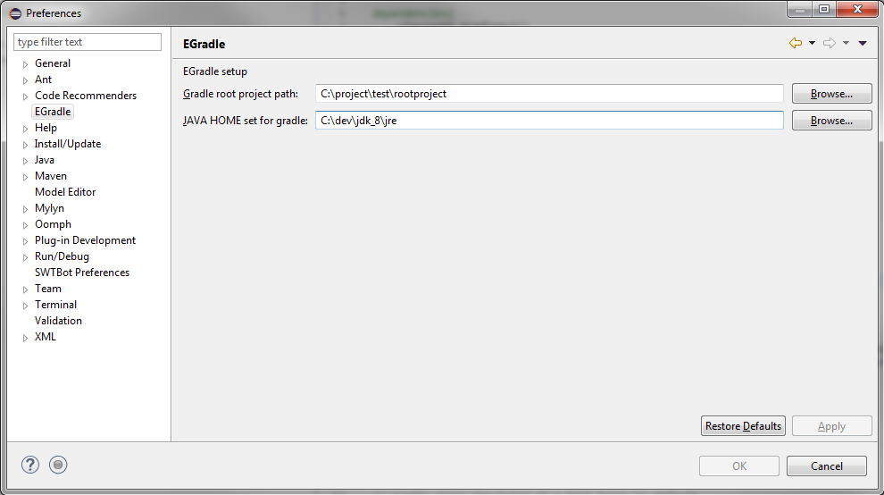

Setup
Prerequisites
EGradle uses the "bash" command. To get it on windows working, simply install git for windows with gitbash (default).
Currently its not possible to change the command it's fix.
Preferences
Go to preferences, search for EGradle settings, setup your root project path and the JAVA_HOME to set for gradle wrapper.
